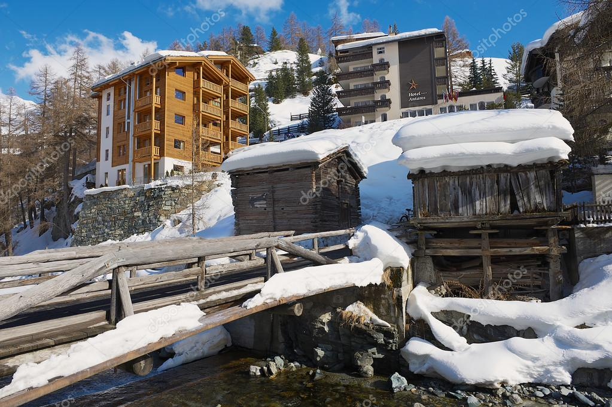

Швейцария
- 
-
Комплекс Fraser Suites Geneva расположен в районе Рю-дю-Марше, в 300 метрах от собора Сен-Пьер, в 10 минутах ходьбы от фонтана Же-До и в 800 метрах от железнодорожного вокзала Гар-де-Корнавин. К услугам гостей номера-студио с собственной мини-кухней и бесплатным Wi-Fi.
В числе удобств всех номеров-студио комплекса Fraser Suites Geneva с роскошными интерьерами — хорошо оборудованная мини-кухня, телевизор с плоским экраном и спутниковыми каналами, гостиная зона с диваном, а также ванная комната с душем, феном и бесплатными туалетно-косметическими принадлежностями фирмы L'Occitane.
Гости могут бесплатно посещать фитнес-центр в здании комплекса. Кроме того, в распоряжении гостей круглосуточная стойка регистрации, круглосуточный фитнес-центр и бизнес-центр. Услуги прачечной предоставляются бесплатно, а услуги химчистки — за дополнительную плату.
Европейское отделение ООН в Женеве находится в 2,2 км от комплекса Fraser Suites Geneva. Расстояние до ближайшего международного аэропорта Женевы составляет 4 км.